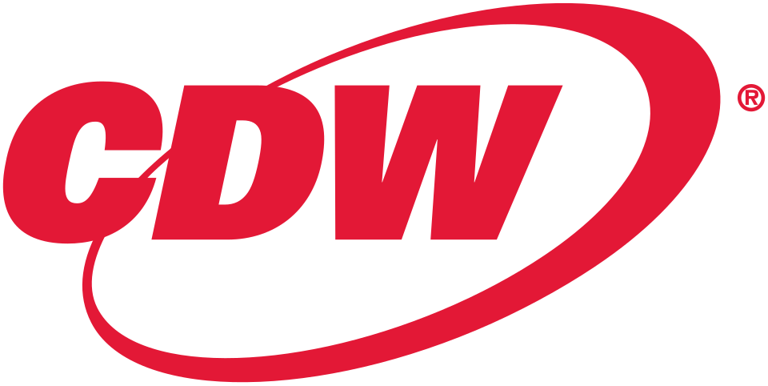

CDW
CDW는 미국의 복수 브랜드 정보기술 서비스 제공 기업이다. 미국·영국·캐나다의 기업, 정부, 교육 및 의료 부문을 대상으로 사업을 운영한다.
최종 업데이트

CDW는 어떤 브랜드인가
CDW는 여러 브랜드의 정보기술 제품과 서비스를 공급하는 미국 기업이다. 고객 범위는 기업과 정부 기관, 교육 및 의료 부문을 포함한다.
미국뿐 아니라 영국과 캐나다에서도 사업을 운영하며 본사는 일리노이주 Vernon Hills에 있다. Fortune 500 기업이며 2023년 연간 순매출은 $21 billion이다.
2018년 매출 기준 미국 기업 Fortune 500 목록에서 189위를 기록했고 2023년 12월 18일 Nasdaq-100 지수 구성 종목이 되었다. 인수한 기업과 해외 법인을 통해 정보기술 재판매 및 서비스 역량을 확장했다.
CDW는 어떻게 시작되고 성장했나
Michael Krasny와 John Marks가 1984년 MPK Computing이라는 이름으로 설립했다. 두 창업자가 무료 배포 신문에 컴퓨터와 프린터 판매 광고를 게재한 것이 사업의 출발점이다.
회사 이름은 이후 Computer Discount Warehouse를 거쳐 CDW로 바뀌었다. 2007년 Madison Dearborn Partners와 Providence Equity Partners가 $7 billion에 인수했으며, 2013년 7월 2일 CDW Corporation이라는 이름으로 Nasdaq 시장에서 다시 기업공개를 했다.
CDW의 브랜드 아이덴티티는 무엇인가
복수 브랜드 정보기술 제품과 서비스를 기업뿐 아니라 정부, 교육, 의료 부문에 공급하고 미국·영국·캐나다에서 운영하는 점이 구분점이다.
CDW의 대표 제품과 서비스는 무엇인가
CDW는 기업, 정부, 교육기관과 의료기관에 여러 브랜드의 정보기술 제품과 서비스를 제공한다. 2003년 Micro Warehouse를 인수했고 2006년 IBM, Cisco, Microsoft 제품과 서비스를 재판매하던 Berbee를 현금 $175 million에 인수했다.
Berbee는 CDW Advanced Technology Services라는 사업부가 되었다. 2015년에는 영국 정보기술 기업 Kelway Ltd.의 잔여 지분 65%를 인수했으며, 2021년 Sirius Computer Solutions, Inc.
인수를 완료했다. 2005년에는 분기 간행물 BizTech magazine을 창간했다.
CDW는 지금 어떤 상태인가
CDW Corporation은 CDW LLC와 CDW Finance Corporation을 완전 자회사로 두고 있다. 캐나다에서는 온타리오주 Etobicoke에 기반을 둔 CDW Canada Incorporated로 사업을 운영한다.
2023년 연간 순매출은 $21 billion이며 같은 해 Nasdaq-100 지수 구성 종목에 편입했다.
CDW 로고는 어떻게 변해왔나
자주 묻는 질문
CDW는 어느 나라 브랜드인가요?
CDW는 미국의 기술·전자 브랜드입니다.
CDW는 언제 설립되었나요?
CDW는 1984년 설립되었습니다.
CDW의 브랜드 아이덴티티는 무엇인가요?
복수 브랜드 정보기술 제품과 서비스를 기업뿐 아니라 정부, 교육, 의료 부문에 공급하고 미국·영국·캐나다에서 운영하는 점이 구분점이다.
CDW의 대표 제품은 무엇인가요?
CDW는 기업, 정부, 교육기관과 의료기관에 여러 브랜드의 정보기술 제품과 서비스를 제공한다.
CDW는 현재 어떤 상태인가요?
CDW Corporation은 CDW LLC와 CDW Finance Corporation을 완전 자회사로 두고 있다.
CDW의 창업자는 누구인가요?
CDW의 창업자는 Michael Krasny입니다(위키데이터 기준).
CDW의 본사는 어디에 있나요?
CDW의 본사는 Vernon Hills에 있습니다(위키데이터 기준).
출처와 검증
CDW 관련 참고: 공식 웹사이트 · 위키데이터 Q1023155 · 영어 위키백과. 브랜드명은 한글과 원어를 함께 표기하되 데이터에 없는 표기는 만들지 않습니다. 기원 국가·설립연도는 검수된 정의문에서 확인된 값을 우선하고, 없을 때만 공식 웹사이트 URL이 일치하는 위키데이터 개체의 값을 씁니다. 위키데이터 값은 2026-09-12 기준입니다.